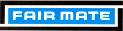
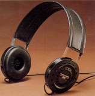
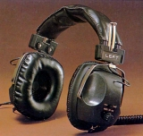
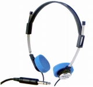
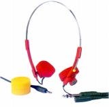
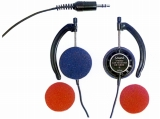

FAIR MATE(フェアメイト)
朝日通商の無線機、オーディオ機器のブランド。玩具（ラジコン等）の製造と家電機器の他社のＯＥＭ受託を行っていた。同社は1991年にカシオ傘下に入り(買収）、2000年に事業を別法人に移し、特別清算→倒産した。該当法人はシー・シー・ピーに社名を変更、現在ではバンダイ傘下になっているらしい。なおサイト公開時（2009/3月）では、iPod 対応のスピーカを「フェアメイト」ブランドで販売する同名の「旭通商」という会社が存在したが、同社の設立は2004年10月となっており、ここで扱うブランドとの関係は不明。
ネット・オークションで「カタログ ヘッドフォン」で検索し、たまたまヒットしたものを購入したが、販売元が「フェアメイト株式会社」となっている。しかし、住所が「朝日通商ビル」となっていること、ラジカセ等と同じロゴを使用していることから上記のブランドと同一と判断した。
�@年代不詳(1970年代末〜80年代初頭？）のカタログ掲載の機種
ヘッドフォンの外観についてはどこか1970年代の大手ブランドの製品を思わせるデザインをしている。
なお、カタログには発行年月を示す記述が一切ないが、同時に収録される商品がカセット及び８トラックのカラオケであること、判別するカラオケ収録曲から1970年代末〜1980年代上旬のものとして扱う。
 
＊SD-26についてイベントで撮影した画像を使用しました。撮影及び掲載をご許可いただき、ありがとうございました。
�A1982年？のカタログ掲載の機種
既出のSD-26、50が引き続き掲載されており、上記のカタログの次の世代の機種群だと思われる。
主力機種はソニーのMDR-3以降の、スポンジイヤパッドの軽量機種。過渡期の製品のためか、標準プラグのものと、ミニプラグのものが混在している。また他社でも70年代末〜80年代初頭に散見する耳掛け型もあったようだ。


（左 SD-60 右 SD-90)
(ER-5800)＊SD-60〜95と同時期の製品には、モノラルタイプのMD-80がある。デザインはSD-60と同系統。
＊フェアメイトのヘッドフォンでは、このほかSD-25、SD-750、SD-3900CDという機種をオークションで見かけた。SD-25はSD-26に似たインピーダンス8Ωの機種だった。SD-750はSD-60〜95の系統のスポンジイヤパッドの軽量機、SD-3900CDは1990年頃の廉価版密閉型(例 ソニーのMDR-CD100など）だった。
サイトマップへ